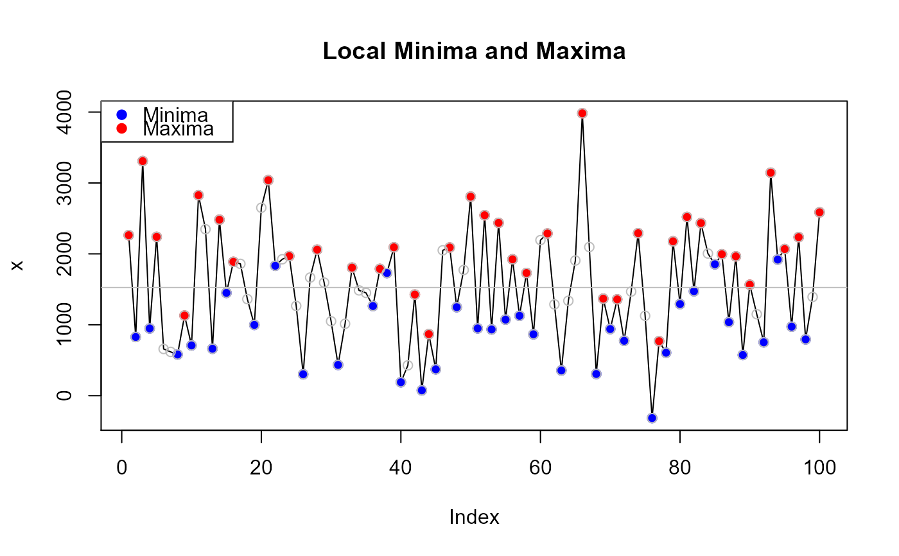
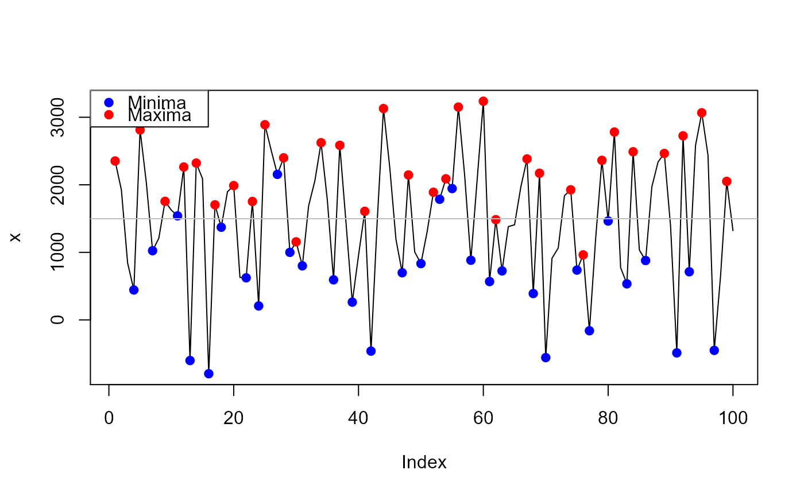

Calculates the local minimums and maximums in a numeric vector, indicating inflection points in the distribution.
local.min.max(x, dev = mean, plot = TRUE, add.points = FALSE, ...)
| x | A numeric vector |
|---|---|
| dev | Deviation statistic (mean or median) |
| plot | plot the minimum and maximum values with the distribution (TRUE/FALSE) |
| add.points | Should all points of x be added to plot (TRUE/FALSE) |
| ... | Arguments passed to plot |
A list object with:
minima - minimum local values of x
maxima - maximum local values of x
mindev - Absolute deviation of minimum from specified deviation statistic (dev argument)
maxdev - Absolute deviation of maximum from specified deviation statistic (dev argument)
Useful function for identifying inflection or enveloping points in a distribution
Jeffrey S. Evans jeffrey_evans@tnc.org
x <- rnorm(100,mean=1500,sd=800) ( lmm <- local.min.max(x, dev=mean, add.points=TRUE, main="Local Minima and Maxima") )#> $minima #> [1] 443.3309 1024.8035 1540.0720 -601.2204 -796.2569 1372.2483 623.3444 #> [8] 207.1132 2154.5977 1000.1723 800.5247 593.6534 263.2346 -461.4715 #> [15] 698.3658 833.6783 1786.2130 1944.4076 883.3796 567.8099 725.3411 #> [22] 390.3782 -557.9142 737.6746 -160.4750 1464.0744 534.2649 879.3094 #> [29] -487.8129 712.9342 -450.6043 #> #> $maxima #> [1] 2352.549 2812.562 1755.167 2263.373 2321.658 1703.749 1988.529 1753.199 #> [9] 2889.941 2399.685 1156.002 2623.627 2585.231 1607.863 3128.903 2145.586 #> [17] 1890.130 2089.169 3150.799 3236.936 1483.781 2383.157 2171.456 1926.023 #> [25] 963.063 2362.414 2781.494 2489.583 2464.169 2725.205 3066.105 2050.743 #> #> $devmin #> [1] 1054.45955 472.98700 42.28149 2099.01091 2294.04741 125.54221 #> [7] 874.44604 1290.67723 656.80722 497.61812 697.26578 904.13708 #> [13] 1234.55585 1959.26200 799.42461 664.11214 288.42254 446.61714 #> [19] 614.41085 929.98056 772.44938 1107.41225 2055.70468 760.11587 #> [25] 1658.26544 33.71602 963.52553 618.48106 1985.60334 784.85627 #> [31] 1948.39472 #> #> $devmax #> [1] 854.75881 1314.77182 257.37652 765.58241 823.86765 205.95833 #> [7] 490.73865 255.40893 1392.15092 901.89429 341.78863 1125.83660 #> [13] 1087.44102 110.07252 1631.11233 647.79598 392.33939 591.37832 #> [19] 1653.00867 1739.14570 14.00992 885.36667 673.66602 428.23219 #> [25] 534.72747 864.62401 1283.70379 991.79239 966.37898 1227.41449 #> [31] 1568.31433 552.95283 #># return only local minimum values local.min.max(x)$minima#> [1] 443.3309 1024.8035 1540.0720 -601.2204 -796.2569 1372.2483 623.3444 #> [8] 207.1132 2154.5977 1000.1723 800.5247 593.6534 263.2346 -461.4715 #> [15] 698.3658 833.6783 1786.2130 1944.4076 883.3796 567.8099 725.3411 #> [22] 390.3782 -557.9142 737.6746 -160.4750 1464.0744 534.2649 879.3094 #> [29] -487.8129 712.9342 -450.6043